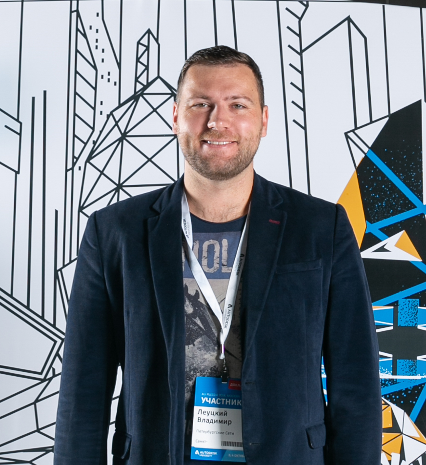
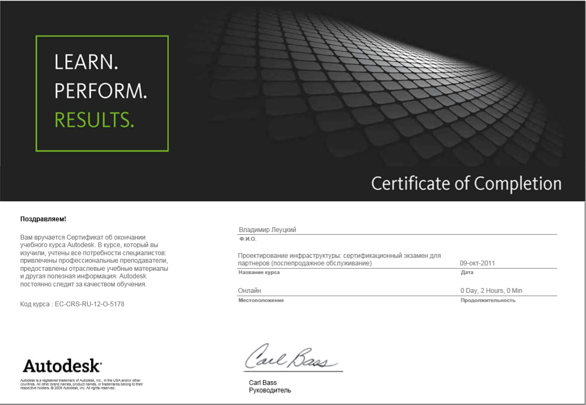
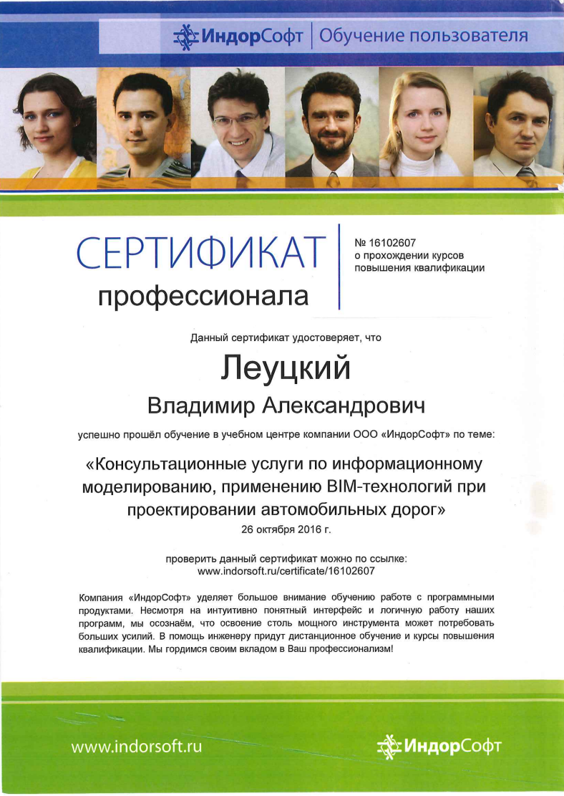
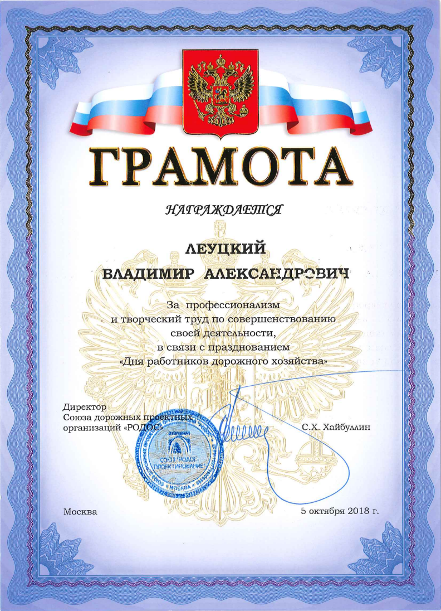

12+ лет в проектировании инфраструктуры. Превращаю рутину Civil 3D в одну кнопку.
Не просто программист, а инженер-проектировщик с опытом более 10 лет. Я прошел путь от чертежника до BIM-менеджера и разработчика, поэтому точно знаю, где «болит» у специалистов при работе в Civil 3D.
Моя специализация — автоматизация процессов проектирования инфраструктуры (дороги, сети) и внедрение BIM-технологий на уровне предприятия. А также занимаюсь со своей командой подъемом BIM моделей по 2D чертежам, с прохождением экспертизы.




Инструменты, созданные инженером для инженеров. Освободите время от рутины.
Интеллектуальная обрезка поверхностей. Автоматически находит внешние контуры площадки, лечит микро-самопересечения (Illegal Boundary) и без проблем работает с DREF.
Умное назначение кодов КСИ. Читает любые Excel-файлы классификатора, автоматически ищет соответствия, назначает IFC классы и создает ведомости.
Преобразование безнапорных сетей в напорные с полным сохранением геометрии, уклонов и высотных отметок.
Автоматический валидатор XML-файлов каталога Civil 3D. Лечит дубликаты GUID, восстанавливает пути, автоматически генерирует и сжимает BMP превью, а также регистрирует потерянные параметры.
Утилита для обхода ограничений стандартного PartBuilder. Открывает доступ к скрытым параметрам, позволяет быстро клонировать детали и гибко настраивать семейства труб и колодцев.
Нужен уникальный инструмент? Разработаю плагин любой сложности под стандарты вашей компании для Civil 3D, AutoCAD или Revit.
Глубокое погружение в настройку каталогов. Только практика без воды.
Полный цикл: от инженерных изысканий и 3D-моделирования до разработки собственных плагинов.
Подъем моделей по 2D чертежам